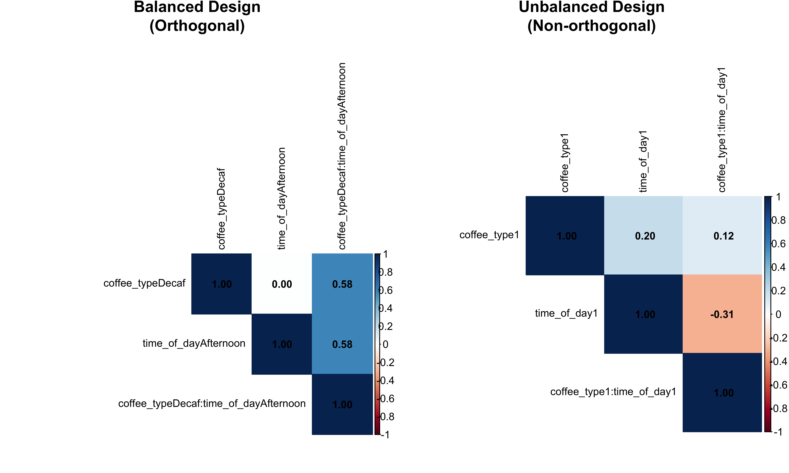
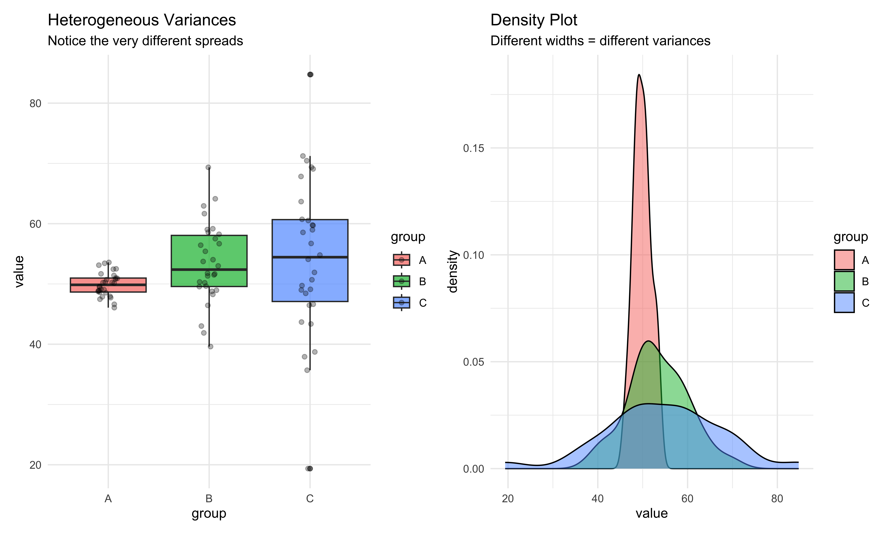
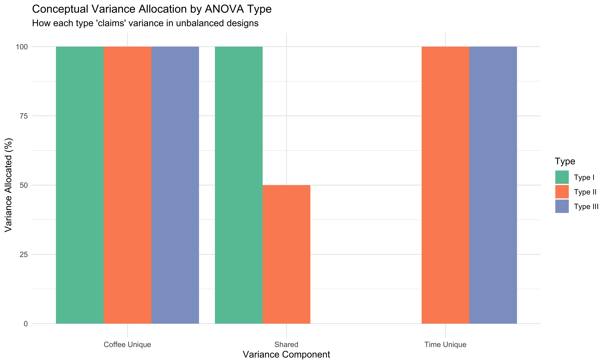

knitr::opts_chunk$set(echo = TRUE, warning = FALSE, message = FALSE, fig.width = 10, fig.height = 6)
library(tidyverse)
library(car)
library(emmeans)
library(knitr)
library(kableExtra)
library(patchwork)
library(corrplot)
# Helper function for separators
sep_line <- function(char = "=", n = 50) {
cat(paste(rep(char, n), collapse = ""), "\n")
}Statistics Basics
Content summary
Statistical tests, Statistics, Statistic, CLT, etc.
Part 1: The Coffee Shop Example - Why ANOVA Types Matter
Setting the Stage with a Simple Story
Imagine you own a coffee shop and want to understand what affects customer satisfaction scores (1-10 scale). You consider two factors:
- Coffee Type: Regular vs Decaf
- Time of Day: Morning vs Afternoon
Let’s create this scenario with data:
set.seed(42)
# Create a BALANCED design first (equal sample sizes)
n_per_cell <- 20 # 20 customers in each combination
balanced_coffee <- expand.grid(
coffee_type = c("Regular", "Decaf"),
time_of_day = c("Morning", "Afternoon"),
replicate = 1:n_per_cell
) %>%
mutate(
# Create satisfaction scores with main effects and interaction
satisfaction = case_when(
coffee_type == "Regular" & time_of_day == "Morning" ~ rnorm(n(), 8, 1), # High satisfaction
coffee_type == "Regular" & time_of_day == "Afternoon" ~ rnorm(n(), 6, 1), # Medium
coffee_type == "Decaf" & time_of_day == "Morning" ~ rnorm(n(), 5, 1), # Low-medium
coffee_type == "Decaf" & time_of_day == "Afternoon" ~ rnorm(n(), 7, 1) # Medium-high
),
coffee_type = factor(coffee_type),
time_of_day = factor(time_of_day)
) %>%
select(-replicate)
# Show the structure
print("Balanced Design - Sample Sizes:")[1] "Balanced Design - Sample Sizes:"table(balanced_coffee$coffee_type, balanced_coffee$time_of_day)
Morning Afternoon
Regular 20 20
Decaf 20 20# Calculate means for each cell
cell_means_balanced <- balanced_coffee %>%
group_by(coffee_type, time_of_day) %>%
summarise(
mean_satisfaction = mean(satisfaction),
n = n(),
.groups = 'drop'
)
kable(cell_means_balanced, digits = 2,
caption = "Mean Satisfaction Scores - Balanced Design") %>%
kable_styling(bootstrap_options = c("striped", "hover"))| coffee_type | time_of_day | mean_satisfaction | n |
|---|---|---|---|
| Regular | Morning | 8.31 | 20 |
| Regular | Afternoon | 5.74 | 20 |
| Decaf | Morning | 5.00 | 20 |
| Decaf | Afternoon | 7.01 | 20 |
Now Let’s Create Reality: Unbalanced Data
In real life, you don’t get equal numbers of customers in each category. Maybe fewer people order decaf in the morning:
# Create UNBALANCED design (unequal sample sizes)
set.seed(42)
unbalanced_coffee <- bind_rows(
# Regular + Morning: 30 customers (popular!)
data.frame(
coffee_type = "Regular",
time_of_day = "Morning",
satisfaction = rnorm(30, 8, 1)
),
# Regular + Afternoon: 25 customers
data.frame(
coffee_type = "Regular",
time_of_day = "Afternoon",
satisfaction = rnorm(25, 6, 1)
),
# Decaf + Morning: 10 customers (unpopular combination)
data.frame(
coffee_type = "Decaf",
time_of_day = "Morning",
satisfaction = rnorm(10, 5, 1)
),
# Decaf + Afternoon: 20 customers
data.frame(
coffee_type = "Decaf",
time_of_day = "Afternoon",
satisfaction = rnorm(20, 7, 1)
)
) %>%
mutate(
coffee_type = factor(coffee_type),
time_of_day = factor(time_of_day)
)
print("Unbalanced Design - Sample Sizes:")[1] "Unbalanced Design - Sample Sizes:"table(unbalanced_coffee$coffee_type, unbalanced_coffee$time_of_day)
Afternoon Morning
Decaf 20 10
Regular 25 30cell_means_unbalanced <- unbalanced_coffee %>%
group_by(coffee_type, time_of_day) %>%
summarise(
mean_satisfaction = mean(satisfaction),
n = n(),
.groups = 'drop'
)
kable(cell_means_unbalanced, digits = 2,
caption = "Mean Satisfaction Scores - Unbalanced Design") %>%
kable_styling(bootstrap_options = c("striped", "hover"))| coffee_type | time_of_day | mean_satisfaction | n |
|---|---|---|---|
| Decaf | Afternoon | 7.13 | 20 |
| Decaf | Morning | 4.94 | 10 |
| Regular | Afternoon | 5.92 | 25 |
| Regular | Morning | 8.07 | 30 |
Part 2: The Mathematical Foundation of ANOVA
The General Linear Model
ANOVA is actually a special case of linear regression. Our two-way ANOVA model can be written as:
\[Y_{ijk} = \mu + \alpha_i + \beta_j + (\alpha\beta)_{ij} + \epsilon_{ijk}\]
Where:
- \(Y_{ijk}\) = satisfaction score for the \(k\)-th customer with coffee type \(i\) and time \(j\)
- \(\mu\) = grand mean (overall average satisfaction)
- \(\alpha_i\) = main effect of coffee type \(i\) (how much Regular or Decaf changes satisfaction)
- \(\beta_j\) = main effect of time of day \(j\) (how much Morning or Afternoon changes satisfaction)
- \((\alpha\beta)_{ij}\) = interaction effect (does the coffee type effect depend on time of day?)
- \(\epsilon_{ijk}\) = random error (individual differences)
Sum of Squares Decomposition
The total variation in our data can be decomposed:
\[SS_{Total} = SS_{CoffeeType} + SS_{Time} + SS_{Interaction} + SS_{Error}\]
In plain English: Total variation = Variation due to coffee type + Variation due to time + Variation due to their combination + Random variation
Part 3: Why Order Matters - A Visual Explanation
Understanding Sequential vs Simultaneous Testing
# Create a visual demonstration of why order matters
set.seed(123)
# Function to calculate partial correlations and visualize
demonstrate_order_effects <- function(data) {
# Calculate total sum of squares
grand_mean <- mean(data$satisfaction)
ss_total <- sum((data$satisfaction - grand_mean)^2)
# Calculate group means
coffee_means <- tapply(data$satisfaction, data$coffee_type, mean)
time_means <- tapply(data$satisfaction, data$time_of_day, mean)
# Calculate marginal sums of squares (ignoring the other factor)
ss_coffee_alone <- sum(table(data$coffee_type) * (coffee_means - grand_mean)^2)
ss_time_alone <- sum(table(data$time_of_day) * (time_means - grand_mean)^2)
# Create a data frame for visualization
results <- data.frame(
Approach = c("Coffee First", "Time First", "Coffee Alone", "Time Alone"),
Coffee_SS = c(ss_coffee_alone, NA, ss_coffee_alone, NA),
Time_SS = c(NA, ss_time_alone, NA, ss_time_alone),
Order = c("1st", "1st", "Marginal", "Marginal")
)
return(list(
ss_total = ss_total,
ss_coffee_alone = ss_coffee_alone,
ss_time_alone = ss_time_alone,
coffee_means = coffee_means,
time_means = time_means,
grand_mean = grand_mean
))
}
# Apply to both datasets
balanced_results <- demonstrate_order_effects(balanced_coffee)
unbalanced_results <- demonstrate_order_effects(unbalanced_coffee)
# Create comparison table
comparison_df <- data.frame(
Design = c("Balanced", "Balanced", "Unbalanced", "Unbalanced"),
Factor = c("Coffee Type", "Time of Day", "Coffee Type", "Time of Day"),
`SS When Tested First` = c(
balanced_results$ss_coffee_alone,
balanced_results$ss_time_alone,
unbalanced_results$ss_coffee_alone,
unbalanced_results$ss_time_alone
),
check.names = FALSE
)
kable(comparison_df, digits = 2,
caption = "Sum of Squares When Each Factor is Tested First") %>%
kable_styling(bootstrap_options = c("striped", "hover"))| Design | Factor | SS When Tested First |
|---|---|---|
| Balanced | Coffee Type | 21.03 |
| Balanced | Time of Day | 1.60 |
| Unbalanced | Coffee Type | 9.21 |
| Unbalanced | Time of Day | 14.48 |
Why Does Order Matter in Unbalanced Designs?
In unbalanced designs, the factors are correlated. When factors are correlated:
- The effect of Coffee Type partially overlaps with the effect of Time
- Testing Coffee first “claims” the overlapping variance
- Testing Time first would claim that same overlapping variance differently
- This is why Type I (sequential) ANOVA gives different results based on order
Part 4: The Controversy - Types I, II, and III Sum of Squares
Manual Calculation Tables for Understanding
Let’s manually calculate the different types of sum of squares to truly understand what’s happening:
# Function to manually calculate all types of SS
calculate_all_ss_types <- function(data, show_details = TRUE) {
# Prepare data
n <- nrow(data)
grand_mean <- mean(data$satisfaction)
# Get cell means and counts
cell_summary <- data %>%
group_by(coffee_type, time_of_day) %>%
summarise(
mean = mean(satisfaction),
n = n(),
sum = sum(satisfaction),
.groups = 'drop'
)
# Marginal means
coffee_marginal <- data %>%
group_by(coffee_type) %>%
summarise(
mean = mean(satisfaction),
n = n(),
.groups = 'drop'
)
time_marginal <- data %>%
group_by(time_of_day) %>%
summarise(
mean = mean(satisfaction),
n = n(),
.groups = 'drop'
)
if(show_details) {
print("Cell Means and Sample Sizes:")
print(cell_summary)
print("")
print("Marginal Means - Coffee Type:")
print(coffee_marginal)
print("")
print("Marginal Means - Time of Day:")
print(time_marginal)
print("")
print(paste("Grand Mean:", round(grand_mean, 3)))
sep_line("-", 40)
}
# Calculate Type I SS (Sequential)
# Order 1: Coffee -> Time -> Interaction
# SS(Coffee | μ)
ss_coffee_type1 <- sum(coffee_marginal$n * (coffee_marginal$mean - grand_mean)^2)
# For SS(Time | μ, Coffee), we need residuals after fitting Coffee
model_coffee_only <- lm(satisfaction ~ coffee_type, data = data)
residuals_after_coffee <- residuals(model_coffee_only)
# Create pseudo-data with residuals
pseudo_data_time <- data.frame(
residuals = residuals_after_coffee,
time_of_day = data$time_of_day
)
model_time_on_residuals <- lm(residuals ~ time_of_day, data = pseudo_data_time)
ss_time_type1 <- sum((fitted(model_time_on_residuals))^2)
# Calculate Type II SS (Marginal, no interaction)
model_both_main <- lm(satisfaction ~ coffee_type + time_of_day, data = data)
model_coffee_only <- lm(satisfaction ~ coffee_type, data = data)
model_time_only <- lm(satisfaction ~ time_of_day, data = data)
ss_coffee_type2 <- sum((fitted(model_both_main) - fitted(model_time_only))^2)
ss_time_type2 <- sum((fitted(model_both_main) - fitted(model_coffee_only))^2)
# Calculate Type III SS (Marginal, with interaction)
# This requires more complex calculations with contrast coding
# Create results table
results <- data.frame(
`Type` = c("Type I", "Type II", "Type III*"),
`SS_Coffee` = c(ss_coffee_type1, ss_coffee_type2, NA),
`SS_Time` = c(ss_time_type1, ss_time_type2, NA),
check.names = FALSE
)
return(results)
}
# Calculate for both designs
print("BALANCED DESIGN:")[1] "BALANCED DESIGN:"balanced_calc <- calculate_all_ss_types(balanced_coffee, show_details = TRUE)[1] "Cell Means and Sample Sizes:"
# A tibble: 4 × 5
coffee_type time_of_day mean n sum
<fct> <fct> <dbl> <int> <dbl>
1 Regular Morning 8.31 20 166.
2 Regular Afternoon 5.74 20 115.
3 Decaf Morning 5.00 20 100.
4 Decaf Afternoon 7.01 20 140.
[1] ""
[1] "Marginal Means - Coffee Type:"
# A tibble: 2 × 3
coffee_type mean n
<fct> <dbl> <int>
1 Regular 7.03 40
2 Decaf 6.00 40
[1] ""
[1] "Marginal Means - Time of Day:"
# A tibble: 2 × 3
time_of_day mean n
<fct> <dbl> <int>
1 Morning 6.66 40
2 Afternoon 6.37 40
[1] ""
[1] "Grand Mean: 6.516"
---------------------------------------- kable(balanced_calc, digits = 2,
caption = "Manual SS Calculations - Balanced Design") %>%
kable_styling(bootstrap_options = c("striped", "hover"))| Type | SS_Coffee | SS_Time |
|---|---|---|
| Type I | 21.03 | 1.6 |
| Type II | 21.03 | 1.6 |
| Type III* | NA | NA |
print("")[1] ""print("UNBALANCED DESIGN:")[1] "UNBALANCED DESIGN:"unbalanced_calc <- calculate_all_ss_types(unbalanced_coffee, show_details = TRUE)[1] "Cell Means and Sample Sizes:"
# A tibble: 4 × 5
coffee_type time_of_day mean n sum
<fct> <fct> <dbl> <int> <dbl>
1 Decaf Afternoon 7.13 20 143.
2 Decaf Morning 4.94 10 49.4
3 Regular Afternoon 5.92 25 148.
4 Regular Morning 8.07 30 242.
[1] ""
[1] "Marginal Means - Coffee Type:"
# A tibble: 2 × 3
coffee_type mean n
<fct> <dbl> <int>
1 Decaf 6.40 30
2 Regular 7.09 55
[1] ""
[1] "Marginal Means - Time of Day:"
# A tibble: 2 × 3
time_of_day mean n
<fct> <dbl> <int>
1 Afternoon 6.46 45
2 Morning 7.29 40
[1] ""
[1] "Grand Mean: 6.849"
---------------------------------------- kable(unbalanced_calc, digits = 2,
caption = "Manual SS Calculations - Unbalanced Design") %>%
kable_styling(bootstrap_options = c("striped", "hover"))| Type | SS_Coffee | SS_Time |
|---|---|---|
| Type I | 9.21 | 10.17 |
| Type II | 5.34 | 10.61 |
| Type III* | NA | NA |
Type I Sum of Squares (Sequential)
Mathematical Definition:
- \(SS(\alpha | \mu)\) = Sum of squares for A after fitting the mean
- \(SS(\beta | \mu, \alpha)\) = Sum of squares for B after fitting mean and A
- \(SS(\alpha\beta | \mu, \alpha, \beta)\) = Sum of squares for interaction after fitting everything else
Plain English: Type I asks “What does each factor explain that wasn’t already explained by factors entered before it?”
Example: When Type I Makes Sense
Scenario: Educational Achievement Study
Imagine studying factors affecting student test scores where we have a clear causal hierarchy:
- Socioeconomic Status (SES) - This is a background variable that exists before schooling
- School Quality - Students are assigned to schools based partly on where they live (related to SES)
- Teaching Method - Applied within schools
Here, it makes sense to use Type I with SES entered first, then School Quality, then Teaching Method. We want to know:
- How much variance does SES explain?
- How much additional variance does School Quality explain after accounting for SES?
- How much additional variance does Teaching Method explain after accounting for both?
This sequential approach respects the causal/temporal ordering of these factors.
# Type I implementation with detailed output
print("TYPE I - Sequential Sum of Squares")[1] "TYPE I - Sequential Sum of Squares"sep_line("=", 50)================================================== model_type1 <- lm(satisfaction ~ coffee_type + time_of_day + coffee_type:time_of_day,
data = unbalanced_coffee)
anova_type1 <- anova(model_type1)
print(anova_type1)Analysis of Variance Table
Response: satisfaction
Df Sum Sq Mean Sq F value Pr(>F)
coffee_type 1 9.214 9.214 7.9036 0.006186 **
time_of_day 1 10.607 10.607 9.0985 0.003417 **
coffee_type:time_of_day 1 84.400 84.400 72.3995 7.439e-13 ***
Residuals 81 94.426 1.166
---
Signif. codes: 0 '***' 0.001 '**' 0.01 '*' 0.05 '.' 0.1 ' ' 1What Does Each Row Mean?
Click below to understand each row in the ANOVA table:
Click to see explanation
Row 1 - coffee_type: This shows the sum of squares for coffee type when it’s the FIRST factor considered (after the intercept). It answers: “How much variance in satisfaction is explained by coffee type alone?”
Row 2 - time_of_day: This shows the sum of squares for time of day AFTER removing the effect of coffee type. It answers: “How much additional variance is explained by time of day that wasn’t already explained by coffee type?”
Row 3 - coffee_type:time_of_day: This is the interaction term. It answers: “Is the effect of coffee type different at different times of day?” A significant interaction means the effect of one factor depends on the level of the other.
Row 4 - Residuals: This is the unexplained variance - the variation in satisfaction scores that can’t be explained by any of our factors. It represents individual differences and measurement error.
Columns Explained:
- Df (Degrees of Freedom): Number of independent pieces of information. For factors: (number of levels - 1)
- Sum Sq: Total squared deviations explained by that factor
- Mean Sq: Sum Sq divided by Df (average squared deviation)
- F value: Ratio of factor’s Mean Sq to Residual Mean Sq (signal-to-noise ratio)
- Pr(>F): p-value - probability of seeing this F-value or larger if null hypothesis is true
Type II Sum of Squares (Hierarchical)
Mathematical Definition:
- \(SS(\alpha | \mu, \beta)\) = Sum of squares for A after fitting mean and B
- \(SS(\beta | \mu, \alpha)\) = Sum of squares for B after fitting mean and A
- \(SS(\alpha\beta | \mu, \alpha, \beta)\) = Sum of squares for interaction after main effects
Plain English: Type II asks “What does each main effect explain that the other main effect doesn’t, ignoring interactions?”
When to use: When you want to test main effects assuming no interaction (most common in practice)
print("TYPE II - Hierarchical Sum of Squares")[1] "TYPE II - Hierarchical Sum of Squares"sep_line("=", 50)================================================== Anova(model_type1, type = "II")Anova Table (Type II tests)
Response: satisfaction
Sum Sq Df F value Pr(>F)
coffee_type 5.339 1 4.5802 0.035352 *
time_of_day 10.607 1 9.0985 0.003417 **
coffee_type:time_of_day 84.400 1 72.3995 7.439e-13 ***
Residuals 94.426 81
---
Signif. codes: 0 '***' 0.001 '**' 0.01 '*' 0.05 '.' 0.1 ' ' 1What Does Each Row Mean in Type II?
Click to see explanation
Key Differences from Type I:
Row 1 - coffee_type: Now shows SS for coffee type AFTER adjusting for time_of_day (but NOT interaction). It answers: “What unique variance does coffee type explain that time doesn’t?”
Row 2 - time_of_day: Shows SS for time AFTER adjusting for coffee_type (but NOT interaction). It answers: “What unique variance does time explain that coffee type doesn’t?”
Row 3 - coffee_type:time_of_day: Same as Type I - interaction is always tested last.
Why Type II is Often Preferred:
- Tests each main effect controlling for other main effects
- Order doesn’t matter (unlike Type I)
- Assumes no interaction when testing main effects
- More balanced approach for most research questions
Type III Sum of Squares (Marginal)
Mathematical Definition:
- \(SS(\alpha | \mu, \beta, \alpha\beta)\) = Sum of squares for A after fitting everything else
- \(SS(\beta | \mu, \alpha, \alpha\beta)\) = Sum of squares for B after fitting everything else
- \(SS(\alpha\beta | \mu, \alpha, \beta)\) = Sum of squares for interaction after main effects
Plain English: Type III asks “What does each effect explain that isn’t explained by any other effect, including interactions?”
# Type III implementation
# IMPORTANT: Must use sum-to-zero contrasts for Type III
contrasts(unbalanced_coffee$coffee_type) <- contr.sum(2)
contrasts(unbalanced_coffee$time_of_day) <- contr.sum(2)
model_type3 <- lm(satisfaction ~ coffee_type * time_of_day, data = unbalanced_coffee)
print("TYPE III - Marginal Sum of Squares")[1] "TYPE III - Marginal Sum of Squares"sep_line("=", 50)================================================== Anova(model_type3, type = "III")Anova Table (Type III tests)
Response: satisfaction
Sum Sq Df F value Pr(>F)
(Intercept) 3041.77 1 2609.2756 < 2.2e-16 ***
coffee_type 16.40 1 14.0657 0.0003302 ***
time_of_day 0.01 1 0.0077 0.9302036
coffee_type:time_of_day 84.40 1 72.3995 7.439e-13 ***
Residuals 94.43 81
---
Signif. codes: 0 '***' 0.001 '**' 0.01 '*' 0.05 '.' 0.1 ' ' 1What Does Each Row Mean in Type III?
Click to see explanation
Type III Special Characteristics:
Row 1 - (Intercept): Type III includes the intercept test, which tests if the grand mean equals zero (usually not interesting).
Row 2 - coffee_type: Tests coffee type AFTER adjusting for time AND interaction. Answers: “Is there a coffee type effect averaged across all times?”
Row 3 - time_of_day: Tests time AFTER adjusting for coffee type AND interaction. Answers: “Is there a time effect averaged across all coffee types?”
Row 4 - coffee_type:time_of_day: Same as other types - interaction effect.
When Type III is Useful:
- When interaction is significant
- When you want the most conservative test
- When following certain field conventions (e.g., some areas of psychology)
- Tests “average” effects across all levels of other factors
Part 5: Why All Three Types Give the Same Answer for Balanced Data
The Magic of Orthogonality
# Demonstrate orthogonality in balanced vs unbalanced designs
check_orthogonality <- function(data, title) {
# Create design matrix
X <- model.matrix(~ coffee_type * time_of_day, data = data)
# Calculate correlation matrix (excluding intercept)
cor_matrix <- cor(X[, -1])
# Visualize
par(mar = c(5, 4, 4, 2))
corrplot(cor_matrix,
method = "color",
type = "upper",
tl.cex = 0.8,
tl.col = "black",
title = title,
mar = c(0, 0, 2, 0),
addCoef.col = "black",
number.cex = 0.8)
return(cor_matrix)
}
# Check both designs
par(mfrow = c(1, 2))
balanced_cors <- check_orthogonality(balanced_coffee,
"Balanced Design\n(Orthogonal)")
unbalanced_cors <- check_orthogonality(unbalanced_coffee,
"Unbalanced Design\n(Non-orthogonal)")
Why Balanced Designs Make All Types Equal
In balanced designs, the design vectors are orthogonal (uncorrelated):
- Zero Correlation: The correlation between coffee_type and time_of_day is 0
- No Overlapping Variance: Each factor explains completely separate portions of variance
- Order Doesn’t Matter: Since factors don’t overlap, the sequence of testing is irrelevant
- Unique Contributions: Each factor’s contribution is unique and doesn’t depend on others
This is why balanced designs are so desirable in experimental research!
Detailed Comparison Table
# Create a comprehensive comparison
compare_ss_types <- function(data, design_name) {
# Type I (two orders)
model_i_order1 <- lm(satisfaction ~ coffee_type + time_of_day, data = data)
model_i_order2 <- lm(satisfaction ~ time_of_day + coffee_type, data = data)
type_i_order1 <- anova(model_i_order1)
type_i_order2 <- anova(model_i_order2)
# Type II
type_ii <- Anova(model_i_order1, type = "II")
# Type III (with proper contrasts)
data_copy <- data
contrasts(data_copy$coffee_type) <- contr.sum(2)
contrasts(data_copy$time_of_day) <- contr.sum(2)
model_iii <- lm(satisfaction ~ coffee_type + time_of_day, data = data_copy)
type_iii <- Anova(model_iii, type = "III")
# Create comparison table
comparison <- data.frame(
Design = design_name,
Type = c("I (Coffee→Time)", "I (Time→Coffee)", "II", "III"),
Coffee_SS = c(
type_i_order1$`Sum Sq`[1],
type_i_order2$`Sum Sq`[2],
type_ii$`Sum Sq`[1],
type_iii$`Sum Sq`[2]
),
Time_SS = c(
type_i_order1$`Sum Sq`[2],
type_i_order2$`Sum Sq`[1],
type_ii$`Sum Sq`[2],
type_iii$`Sum Sq`[3]
)
)
return(comparison)
}
# Compare both designs
balanced_comparison <- compare_ss_types(balanced_coffee, "Balanced")
unbalanced_comparison <- compare_ss_types(unbalanced_coffee, "Unbalanced")
full_comparison <- rbind(balanced_comparison, unbalanced_comparison)
kable(full_comparison, digits = 2,
caption = "Sum of Squares Comparison: All Types, Both Designs") %>%
kable_styling(bootstrap_options = c("striped", "hover")) %>%
pack_rows("Balanced Design", 1, 4) %>%
pack_rows("Unbalanced Design", 5, 8)| Design | Type | Coffee_SS | Time_SS |
|---|---|---|---|
| Balanced Design | |||
| Balanced | I (Coffee→Time) | 21.03 | 1.60 |
| Balanced | I (Time→Coffee) | 21.03 | 1.60 |
| Balanced | II | 21.03 | 1.60 |
| Balanced | III | 21.03 | 1.60 |
| Unbalanced Design | |||
| Unbalanced | I (Coffee→Time) | 9.21 | 10.61 |
| Unbalanced | I (Time→Coffee) | 5.34 | 14.48 |
| Unbalanced | II | 5.34 | 10.61 |
| Unbalanced | III | 5.34 | 10.61 |
Part 6: Variance Heterogeneity (Unequal Variances)
Creating Data with Unequal Variances
set.seed(123)
# Create data with very different variances
hetero_data <- bind_rows(
data.frame(
group = "A",
value = rnorm(30, mean = 50, sd = 2) # Small variance
),
data.frame(
group = "B",
value = rnorm(30, mean = 52, sd = 8) # Medium variance
),
data.frame(
group = "C",
value = rnorm(30, mean = 54, sd = 15) # Large variance
)
) %>%
mutate(group = factor(group))
# Calculate actual variances
variance_summary <- hetero_data %>%
group_by(group) %>%
summarise(
Mean = mean(value),
Variance = var(value),
SD = sd(value),
n = n(),
.groups = 'drop'
)
kable(variance_summary, digits = 2,
caption = "Group Statistics with Heterogeneous Variances") %>%
kable_styling(bootstrap_options = c("striped", "hover"))| group | Mean | Variance | SD | n |
|---|---|---|---|---|
| A | 49.91 | 3.85 | 1.96 | 30 |
| B | 53.43 | 44.64 | 6.68 | 30 |
| C | 54.37 | 170.22 | 13.05 | 30 |
# Visualize the different variances
p1 <- ggplot(hetero_data, aes(x = group, y = value, fill = group)) +
geom_boxplot(alpha = 0.7) +
geom_point(position = position_jitter(width = 0.1), alpha = 0.3) +
labs(title = "Heterogeneous Variances",
subtitle = "Notice the very different spreads") +
theme_minimal()
p2 <- ggplot(hetero_data, aes(x = value, fill = group)) +
geom_density(alpha = 0.5) +
labs(title = "Density Plot",
subtitle = "Different widths = different variances") +
theme_minimal()
p1 | p2
Testing for Homogeneity of Variance
print("Testing for Equal Variances:")[1] "Testing for Equal Variances:"sep_line("=", 50)================================================== print("Levene's Test (robust to non-normality):")[1] "Levene's Test (robust to non-normality):"levene_test <- leveneTest(value ~ group, data = hetero_data)
print(levene_test)Levene's Test for Homogeneity of Variance (center = median)
Df F value Pr(>F)
group 2 19.13 1.3e-07 ***
87
---
Signif. codes: 0 '***' 0.001 '**' 0.01 '*' 0.05 '.' 0.1 ' ' 1print("")[1] ""print("Bartlett's Test (sensitive to non-normality):")[1] "Bartlett's Test (sensitive to non-normality):"bartlett_test <- bartlett.test(value ~ group, data = hetero_data)
print(bartlett_test)
Bartlett test of homogeneity of variances
data: value by group
Bartlett's K-squared = 73.797, df = 2, p-value < 2.2e-16
Interpreting Variance Tests
Levene’s Test: p < 0.05 indicates unequal variances (assumption violated)
Bartlett’s Test: More powerful but sensitive to non-normality
What to do with unequal variances:
- Use Welch’s ANOVA instead of standard ANOVA
- Use Games-Howell post-hoc test instead of Tukey
- Consider transforming data (log, square root)
- Use robust methods or non-parametric alternatives
Consequences of Ignoring Unequal Variances
# Standard ANOVA (assumes equal variances)
print("Standard ANOVA (assumes equal variances):")[1] "Standard ANOVA (assumes equal variances):" Df Sum Sq Mean Sq F value Pr(>F)
group 2 332 165.9 2.275 0.109
Residuals 87 6343 72.9 print("")[1] ""print("Welch's ANOVA (robust to unequal variances):")[1] "Welch's ANOVA (robust to unequal variances):"welch_test <- oneway.test(value ~ group, data = hetero_data, var.equal = FALSE)
print(welch_test)
One-way analysis of means (not assuming equal variances)
data: value and group
F = 5.2616, num df = 2.000, denom df = 42.497, p-value = 0.009086# Compare p-values
comparison_pvalues <- data.frame(
Test = c("Standard ANOVA", "Welch's ANOVA"),
`Assumes Equal Variances` = c("Yes", "No"),
`p-value` = c(summary(standard_anova)[[1]]$`Pr(>F)`[1], welch_test$p.value),
Decision = c(
ifelse(summary(standard_anova)[[1]]$`Pr(>F)`[1] < 0.05, "Reject H0", "Fail to reject H0"),
ifelse(welch_test$p.value < 0.05, "Reject H0", "Fail to reject H0")
),
check.names = FALSE
)
kable(comparison_pvalues, digits = 4,
caption = "Comparison: Standard vs Welch's ANOVA with Unequal Variances") %>%
kable_styling(bootstrap_options = c("striped", "hover"))| Test | Assumes Equal Variances | p-value | Decision |
|---|---|---|---|
| Standard ANOVA | Yes | 0.1088 | Fail to reject H0 |
| Welch's ANOVA | No | 0.0091 | Reject H0 |
Part 7: Complete Analysis Pipeline
Step-by-Step Analysis Function
analyze_data_complete <- function(data, dv, factors) {
formula_str <- paste(dv, "~", paste(factors, collapse = " * "))
formula_obj <- as.formula(formula_str)
sep_line("=", 60)
print("COMPLETE ANOVA ANALYSIS PIPELINE")
sep_line("=", 60)
# 1. Check balance
print("")
print("STEP 1: CHECKING BALANCE")
sep_line("-", 40)
design_table <- table(data[[factors[1]]], data[[factors[2]]])
print(design_table)
is_balanced <- all(design_table == design_table[1])
print(paste("Design is", ifelse(is_balanced, "BALANCED ✓", "UNBALANCED ⚠️")))
# 2. Fit model
model <- aov(formula_obj, data = data)
anova_table <- anova(model)
# 3. Check assumptions
print("")
print("STEP 2: CHECKING ASSUMPTIONS")
sep_line("-", 40)
# Normality of residuals
shapiro_p <- shapiro.test(residuals(model))$p.value
print(paste("Shapiro-Wilk test p =", signif(shapiro_p, 3)))
# Homogeneity of variances
levene_p <- car::leveneTest(formula_obj, data = data)$`Pr(>F)`[1]
print(paste("Levene’s test p =", signif(levene_p, 3)))
# 4. Effect sizes (eta squared)
print("")
print("STEP 3: EFFECT SIZE (η²)")
sep_line("-", 40)
ss_total <- sum(anova_table[["Sum Sq"]])
ss_effects <- anova_table[["Sum Sq"]][1:(length(factors) + 1)]
eta_squared <- ss_effects / ss_total
effect_names <- rownames(anova_table)[1:(length(factors) + 1)]
for (i in seq_along(eta_squared)) {
result_text <- sprintf("%s: η² = %.3f ", effect_names[i], eta_squared[i])
if (eta_squared[i] < 0.01) {
result_text <- paste0(result_text, "(negligible)")
} else if (eta_squared[i] < 0.06) {
result_text <- paste0(result_text, "(small)")
} else if (eta_squared[i] < 0.14) {
result_text <- paste0(result_text, "(medium)")
} else {
result_text <- paste0(result_text, "(large)")
}
print(result_text)
}
# 5. Post-hoc tests
print("")
print("STEP 5: POST-HOC COMPARISONS")
sep_line("-", 40)
if (levene_p < 0.05) {
print("Using Games-Howell (unequal variances)")
# Implement Games-Howell here if needed
} else {
print("Using Tukey HSD (equal variances)")
if (is_balanced) {
print(TukeyHSD(model))
}
}
return(invisible(model))
}
# Run the pipeline on unbalanced_coffee
final_model <- analyze_data_complete(
unbalanced_coffee,
"satisfaction",
c("coffee_type", "time_of_day")
)============================================================
[1] "COMPLETE ANOVA ANALYSIS PIPELINE"
============================================================
[1] ""
[1] "STEP 1: CHECKING BALANCE"
----------------------------------------
Afternoon Morning
Decaf 20 10
Regular 25 30
[1] "Design is UNBALANCED ⚠️"
[1] ""
[1] "STEP 2: CHECKING ASSUMPTIONS"
----------------------------------------
[1] "Shapiro-Wilk test p = 0.15"
[1] "Levene’s test p = 0.581"
[1] ""
[1] "STEP 3: EFFECT SIZE (η²)"
----------------------------------------
[1] "coffee_type: η² = 0.046 (small)"
[1] "time_of_day: η² = 0.053 (small)"
[1] "coffee_type:time_of_day: η² = 0.425 (large)"
[1] ""
[1] "STEP 5: POST-HOC COMPARISONS"
----------------------------------------
[1] "Using Tukey HSD (equal variances)"Part 8: Practical Decision Tree
When to Use Which Type?
# Create a decision guide
decision_guide <- data.frame(
Scenario = c(
"Balanced design",
"Unbalanced + No interaction",
"Unbalanced + Significant interaction",
"Natural hierarchy of factors",
"Exploratory analysis",
"Following field conventions"
),
`Recommended Type` = c(
"Any (all equal)",
"Type II",
"Type III",
"Type I",
"Type III",
"Check literature"
),
Reasoning = c(
"All types give identical results with balanced data",
"Type II tests main effects properly without interaction assumption",
"Type III tests main effects in presence of interaction",
"Type I respects the causal/temporal order",
"Type III is most conservative",
"Some fields have established preferences"
),
check.names = FALSE
)
kable(decision_guide,
caption = "Decision Guide for Choosing ANOVA Type") %>%
kable_styling(bootstrap_options = c("striped", "hover"))| Scenario | Recommended Type | Reasoning |
|---|---|---|
| Balanced design | Any (all equal) | All types give identical results with balanced data |
| Unbalanced + No interaction | Type II | Type II tests main effects properly without interaction assumption |
| Unbalanced + Significant interaction | Type III | Type III tests main effects in presence of interaction |
| Natural hierarchy of factors | Type I | Type I respects the causal/temporal order |
| Exploratory analysis | Type III | Type III is most conservative |
| Following field conventions | Check literature | Some fields have established preferences |
Part 9: Quick Reference Functions
Comparison Function for All Three Types
# Quick function to compare all three types
compare_anova_types <- function(formula, data, verbose = TRUE) {
require(car)
# Ensure factors
factors <- all.vars(formula)[-1]
for(f in factors) {
if(f %in% names(data)) {
data[[f]] <- factor(data[[f]])
}
}
# Check balance
if(length(factors) == 2) {
design_table <- table(data[[factors[1]]], data[[factors[2]]])
is_balanced <- length(unique(as.vector(design_table))) == 1
} else {
is_balanced <- FALSE
}
# Type I
model1 <- lm(formula, data = data)
# Type II
model2 <- model1
# Type III (need sum contrasts)
data_type3 <- data
for(f in factors) {
if(f %in% names(data_type3)) {
contrasts(data_type3[[f]]) <- contr.sum(nlevels(data_type3[[f]]))
}
}
model3 <- lm(formula, data = data_type3)
# Store results
type1_anova <- anova(model1)
type2_anova <- Anova(model2, type = "II")
type3_anova <- Anova(model3, type = "III")
if(verbose) {
print("========== TYPE I (Sequential) ==========")
print(type1_anova)
print("")
print("========== TYPE II (No Interaction) ==========")
print(type2_anova)
print("")
print("========== TYPE III (Marginal) ==========")
print(type3_anova)
print("")
print("========== RECOMMENDATION ==========")
if(is_balanced) {
print("✓ Balanced design detected - all types equivalent")
print("→ Use Type I for computational efficiency")
} else {
print("⚠️ Unbalanced design detected")
# Check for interaction
if(length(factors) == 2) {
# Get interaction p-value
interaction_term <- paste(factors, collapse = ":")
if(interaction_term %in% rownames(type2_anova)) {
interaction_p <- type2_anova[interaction_term, "Pr(>F)"]
if(!is.na(interaction_p) && interaction_p < 0.05) {
print(paste("→ Significant interaction (p =", round(interaction_p, 3), ")"))
print("→ RECOMMEND: Type III for main effects interpretation")
} else {
print("→ No significant interaction")
print("→ RECOMMEND: Type II for main effects testing")
}
}
}
}
}
# Return results as a list
return(invisible(list(
type1 = type1_anova,
type2 = type2_anova,
type3 = type3_anova,
balanced = is_balanced
)))
}
# Test the function
print("Testing the comparison function with our coffee data:")[1] "Testing the comparison function with our coffee data:"results <- compare_anova_types(satisfaction ~ coffee_type * time_of_day,
unbalanced_coffee, verbose = TRUE)[1] "========== TYPE I (Sequential) =========="
Analysis of Variance Table
Response: satisfaction
Df Sum Sq Mean Sq F value Pr(>F)
coffee_type 1 9.214 9.214 7.9036 0.006186 **
time_of_day 1 10.607 10.607 9.0985 0.003417 **
coffee_type:time_of_day 1 84.400 84.400 72.3995 7.439e-13 ***
Residuals 81 94.426 1.166
---
Signif. codes: 0 '***' 0.001 '**' 0.01 '*' 0.05 '.' 0.1 ' ' 1
[1] ""
[1] "========== TYPE II (No Interaction) =========="
Anova Table (Type II tests)
Response: satisfaction
Sum Sq Df F value Pr(>F)
coffee_type 5.339 1 4.5802 0.035352 *
time_of_day 10.607 1 9.0985 0.003417 **
coffee_type:time_of_day 84.400 1 72.3995 7.439e-13 ***
Residuals 94.426 81
---
Signif. codes: 0 '***' 0.001 '**' 0.01 '*' 0.05 '.' 0.1 ' ' 1
[1] ""
[1] "========== TYPE III (Marginal) =========="
Anova Table (Type III tests)
Response: satisfaction
Sum Sq Df F value Pr(>F)
(Intercept) 3041.77 1 2609.2756 < 2.2e-16 ***
coffee_type 16.40 1 14.0657 0.0003302 ***
time_of_day 0.01 1 0.0077 0.9302036
coffee_type:time_of_day 84.40 1 72.3995 7.439e-13 ***
Residuals 94.43 81
---
Signif. codes: 0 '***' 0.001 '**' 0.01 '*' 0.05 '.' 0.1 ' ' 1
[1] ""
[1] "========== RECOMMENDATION =========="
[1] "⚠️ Unbalanced design detected"
[1] "→ Significant interaction (p = 0 )"
[1] "→ RECOMMEND: Type III for main effects interpretation"Part 10: Summary and Key Takeaways
The Essential Points
Key Takeaways
1. ANOVA Types exist because of unbalanced designs
- Balanced designs: All types give same results
- Unbalanced designs: Results differ, choice matters
2. Type I (Sequential)
- Tests each factor after those before it
- Order matters!
- Use when: You have a natural hierarchy
3. Type II (Hierarchical)
- Tests main effects adjusting for other main effects
- Assumes no interaction
- Use when: Testing main effects, interaction not significant
4. Type III (Marginal)
- Tests each effect adjusting for all others
- Most conservative
- Use when: Interaction is significant
5. Practical Advice
- Always check assumptions first
- Report which type you used and why
- Consider effect sizes, not just p-values
- Be transparent about unbalanced designs
Mathematical Summary
The fundamental difference is in the hypotheses being tested:
Type I (Sequential):
\(H_0: \alpha_i = 0 \;|\; \mu\)Type II (No interaction):
\(H_0: \alpha_i = 0 \;|\; \mu, \beta_j\)Type III (Marginal):
\(H_0: \alpha_i = 0 \;|\; \mu, \beta_j, (\alpha\beta)_{ij}\)
Here, the vertical bar “\(\;|\;\)” means “given that we’ve already accounted for …”.
Visual Summary of Differences
# Create a visual summary of when each type "claims" variance
library(ggplot2)
library(tidyr)
# Create conceptual data for visualization
variance_allocation <- data.frame(
Type = rep(c("Type I", "Type II", "Type III"), each = 3),
Component = rep(c("Coffee Unique", "Shared", "Time Unique"), 3),
Allocation = c(
# Type I: Coffee gets unique + shared
100, 100, 0, # Coffee tested first gets all shared
# Type II: Each gets only unique
100, 50, 100, # Shared split conceptually
# Type III: Most conservative
100, 0, 100 # Neither gets shared
)
)
ggplot(variance_allocation, aes(x = Component, y = Allocation, fill = Type)) +
geom_bar(stat = "identity", position = "dodge") +
labs(title = "Conceptual Variance Allocation by ANOVA Type",
subtitle = "How each type 'claims' variance in unbalanced designs",
y = "Variance Allocated (%)",
x = "Variance Component") +
theme_minimal() +
scale_fill_brewer(palette = "Set2")
Final Recommendations Table
final_recommendations <- data.frame(
`Research Question` = c(
"Do factors A and B affect the outcome?",
"What is the unique contribution of A?",
"Does A matter after controlling for everything?",
"Following a causal chain A→B→C",
"Interaction is significant"
),
`Best Type` = c(
"Type II",
"Type II",
"Type III",
"Type I",
"Type III"
),
`Why` = c(
"Tests main effects properly without assuming interaction",
"Type II isolates unique variance of each factor",
"Type III is most conservative, controls for all",
"Type I respects the sequential nature",
"Type III tests main effects in presence of interaction"
),
check.names = FALSE
)
kable(final_recommendations,
caption = "Final Recommendations for ANOVA Type Selection") %>%
kable_styling(bootstrap_options = c("striped", "hover", "condensed"))| Research Question | Best Type | Why |
|---|---|---|
| Do factors A and B affect the outcome? | Type II | Tests main effects properly without assuming interaction |
| What is the unique contribution of A? | Type II | Type II isolates unique variance of each factor |
| Does A matter after controlling for everything? | Type III | Type III is most conservative, controls for all |
| Following a causal chain A→B→C | Type I | Type I respects the sequential nature |
| Interaction is significant | Type III | Type III tests main effects in presence of interaction |
Remember this Above All
The Golden Rule of ANOVA Types
If your design is balanced, rejoice! All types give the same answer.
If your design is unbalanced:
- Check if interaction is significant
- If NO interaction → Use Type II
- If YES interaction → Use Type III
- If natural hierarchy → Consider Type I
Always report: Which type you used and why!
Appendix: R Package Requirements
# Required packages for this tutorial
required_packages <- c(
"tidyverse", # Data manipulation and visualization
"car", # For Type II and III ANOVA
"emmeans", # Estimated marginal means
"knitr", # For tables
"kableExtra", # Enhanced tables
"patchwork", # Combining plots
"corrplot", # Correlation plots
"rstatix" # Additional statistical tests
)
# Install if needed
install.packages(required_packages)Citation
BibTeX citation:
@online{rasheduzzaman2025,
author = {Md Rasheduzzaman},
title = {Statistics {Basics}},
date = {2025-09-23},
langid = {en},
abstract = {Statistical tests, Statistics, Statistic, CLT, etc.}
}
For attribution, please cite this work as:
Md Rasheduzzaman. 2025. “Statistics Basics.” September 23,
2025.